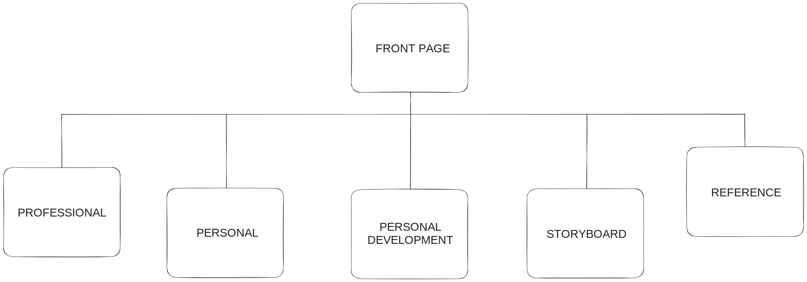
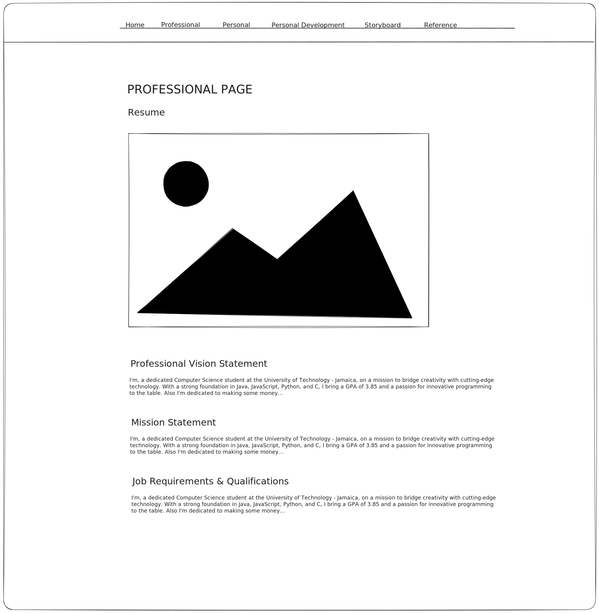
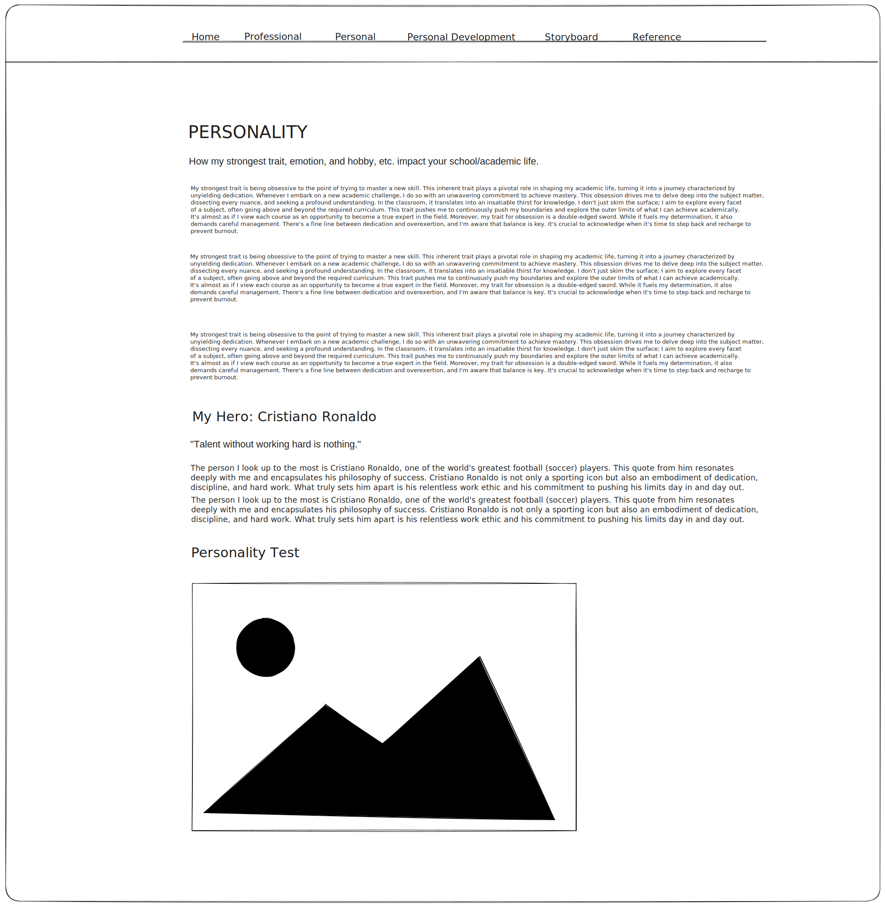
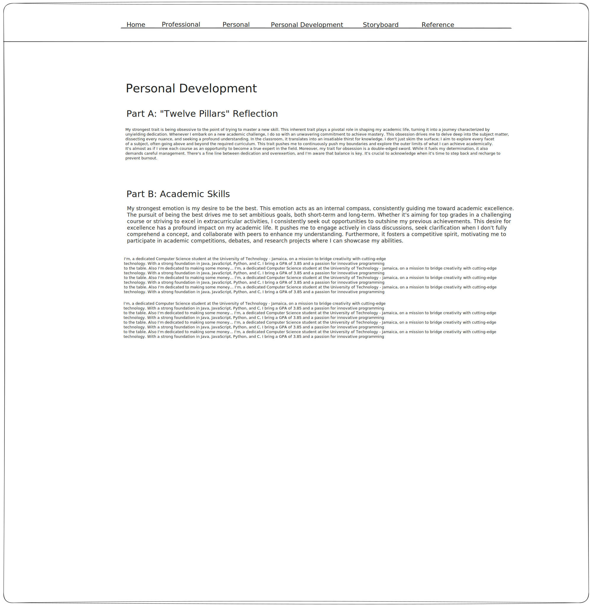
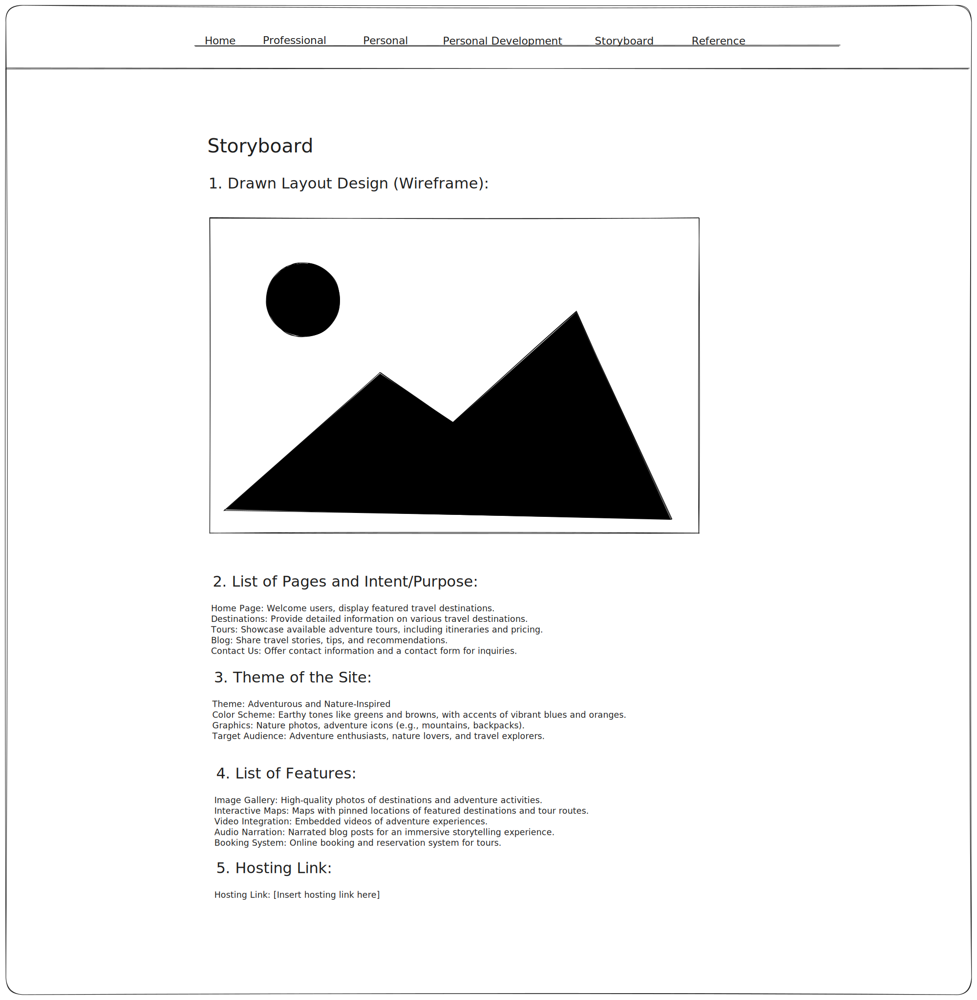
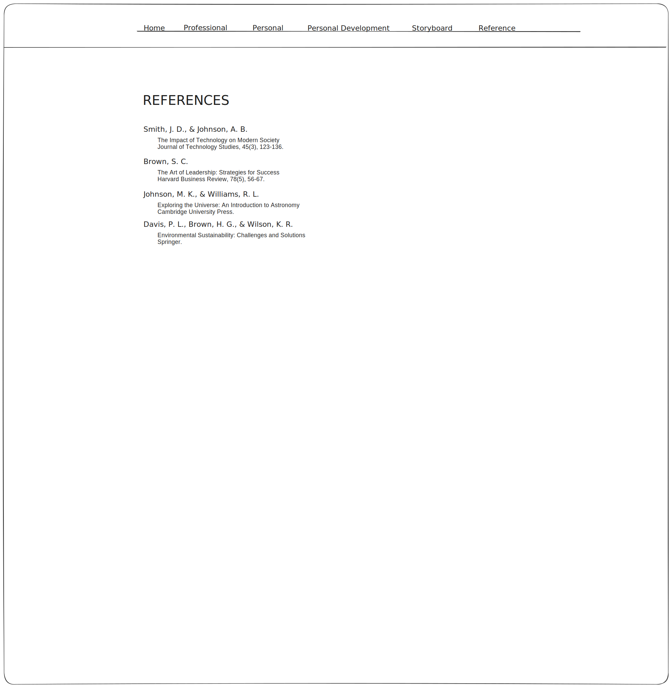

Storyboard
1. Drawn Layout Design (Wireframe):
Pages Layout
Professional Page
Personality Page
Personal Development Page
StoryBoard Page
References Page

2. List of Pages and Intent/Purpose:
- Home Page: Welcomes users, provides the ability to contact me through a clickable photo of myself that opens and email client, and also and introduction about myself.
- Professional: Includes a visually appealing version of my Resume. Also the requirements and qualifications for my intended career path computer science.
- Personality: Highlights my dominant persolaity traits, emotions, or hobbies and how they impact my academic life. Also a favorite scene, mottto, or quote from my hero or mentor, explaining who they are and why I admire them. Also my Kiersey Personality Test results integrated in the webpage, with a brief refleciton on the validity of the test.
- Personal Development: My summary of Chapters 4 - 7 of "Twelve Pillars" by Jim Rohn and Chris Widener (pp. 43 - 80). Additionally, it includes the name of my degree program and lists the top 3 skills I have acquired thus far.
- StoryBoard: Encompasses the desing layout or the wireframe of the website usign a digital tool. Specifies each page and their respective purpose. Also defines the overall theme of the site, incorporating color schemes, graphics, and indentifying the target audience. Lastly it includes the website hosting link.
- Reference: A page that compiles all the sources of information used in this assignment, including books, youtube videos, and the tool used for wireframing/storyboard, formatted according the APA guidelines.
3. Theme of the Site:
- Theme: Very sleek, mysterious, and professional. Almost batman like.
- Color Scheme: Black & white, no vibrant colors except for in image.
- Graphics: Black and white selfie on the home page, my resume using a sleek template, images from Kiersey.com explaining my personality from the test, storyboard images of wireframes from a digital tool
- Target Audience: Employers/Clients looking for a trustworthy and capable web developer/software engineer.
4. List of Features:
- Menu bar: has links and color hover effects.
- Hero button: an additional way to reach the email client.
- Animation: When Home or professional page is clicked there is a slight downward motion.
5. Hosting Link:
Hosting Link: My Hosted Website